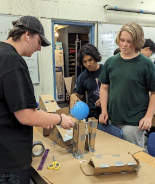
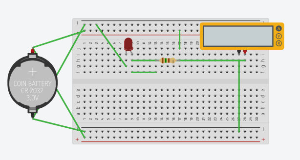

August 17, 2023 - I have started working on this website!
My Favorite Website
August 21, 2023 - I have started working on coding!
August 22, 2023 - I have started working more on coding!
August 23, 2023 - Same thing
August 24, 2023 - We did an activity during Engineering class today.
August 25, 2023 - It has been one whole week since I started working on coding this website. I have no plans for the weekend other than spending time at home. I've learned some stuff about building websites. I learned how to make this journal, publish it to github, and finish it!
September 1, 2023 - I learned alot about engineering discipline. On Thursday, I did a challenge where I created a sink in tinkercad in under 20 minutes.
And here is a photo from last week's challenge!

See you next week, which is a short week!
September 7, 2023 - Today, me and my team started working on a prototype for a mechanical machine we're going to build! We are currently learning on how to build a mechanical machine that can bring a needle up and pop a baloon. I am learning how to build a mechanical machine.

And here is a photo of the Prototype!
See you next week!
September 22, 2023 - Last week, me and my team made our Rube Goldberg course to pop the baloon! The device worked well when we tested it this week!



And this week, we tested the course and sucessfully popped the baloon! We also did a few challenges where we made a floatation device (mine sank)
And the other challenge was where we graphed and cut out the letter E using paper! And lastly, I learned about computer engineering! We learned about RAM, STorage, and more! See you next week!
September 28, 2023 - This week was really fun! This week, I took apart a PC, and i put it back together spectactuarly! Taking apart technology really interests me, as i've done it before! I learned stuff I already learned 2 years ago about computers, so i was pretty advanced at the challenge.

Cool Video I watched
For this weekend, my Mother and my Sister will be out of town, so I will be all by myself. See you next week!
October 6, 2023 - I learned alot about BIoengineering this week and it seemed really interesting. I saw a 3d printed heart, robotic hands, etc. Also, me and my team this week made a hand out of cardboard and string that could pick up a water bottle. We worked on it for 3 days, tested it, and spent alot of effort into it, and it turned out great! This really teaches us how bioengineering works, and I hope it can improve in the future!

Today is my grandfather's 75th birthday! I unfortunatley cannot go to Homecoming, so see you next week!
October 13, 2023- Happy Friday the 13th! This week, we learned alot about space, how to do simple tasks in space, and we learned a lot about airplanes!
Here is a cad of an airplane me and my group are building!
My team and I are planning on building this plane out of cardboard. Here is our BOM!
One thing I like about this class is that we do alot of things related to building! See you next week!
October 20, 2023 - This week we learned alot about building a rocket using a bottle and some cardboard. We did a really good job designing the rocket, as we put really good cut out cardboard designs of the wings and it's tail, and it launched as expected! What I did on the rocket was that I helped design the wings, helped cut them out using cardboard, and I helped attach them to the rocket! I am very proud of myself for helping out, and I hope that in the future I can help collaborate on more projects like this!
Here is a photo of our rocket!
And here is a video of our rocket!
See you next week!
October 26, 2023 - Today, we learned about pollution and contamination on this planet. We mostly learned about how contaminated water is turned into fresh clean drinking water. I saw the process of how it works, step by step, and was really fascinated with it. It's interesting seeing dirty, unclean, contaminated water be turned into clean drinking water just by getting rid of all the bacteria. This week, me and my classmate made a water filter that turned unclean water into slightly less contaminated water. It went pretty well, to do this we used Cotton, rocks, and dirty water all in a bottle.
Here is the Water Filter I made! As you can see it turned contaminated water into slightly less contaminated water!

I am exicted for the fact that we finally have a 3 day weekend after a while. See you next week!
November 3, 2023 - This week, we learned lots about computer engineering. We were told about how circuits are connected, how computer motherboards are made up, and how certain components in the motherboard of devices are made up. it was really interesting, and in tinkercad we made some 3d breadboard designs.
Here is a photo of my 3D Breadboard design.

And here's a bonus item!
I will see you next week
November 9, 2023 - Over the past week, we learned how to power LED Lights using a breadboard. What interested me was the way we were able to power 3 LED lights using only one capacitor.
Some photos of my circuts can be seen here!
Tomorrow, we have no school on Friday, November 10th, so we have a 3 day weekend. See you next week.
January 9, 2023 - Happy New Year! Alot has happened in the past 2 months, here's what happened:
For my final, I did a bridge building competition using spaghetti and glue. Then the bridge would be weighed and it had to be able to hold at least 400 kg of water.
My bridge was long, skinny, and it broke in half on the day of the Final!
Luckily, my bridge still managed to hold a ton of water (700+ kg) and I got a good grade.